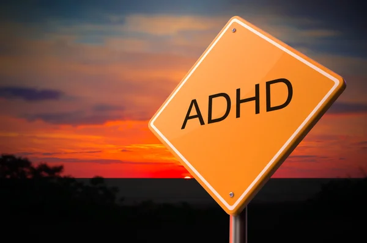

ClearMinds Nederland
Informatie
ADHD, wat staat voor Attention Deficit Hyperactivity Disorder, is een neurobiologische aandoening die vaak in de kindertijd begint maar ook bij volwassenen kan voorkomen.
Het wordt gekenmerkt door drie hoofdsymptomen: aandachtstekort, hyperactiviteit en impulsiviteit.
Mensen met ADHD kunnen moeite hebben met het vasthouden van de aandacht, organisatie, planning en het beheren van taken.
De diagnose van ADHD is gebaseerd op de criteria vastgesteld in de Diagnostic and Statistical Manual of Mental Disorders (DSM-5).
Het diagnostisch proces omvat een grondige evaluatie van gedrag, geschiedenis en het uitsluiten van andere mogelijke oorzaken.
ADHD heeft aanzienlijke invloed op het dagelijks functioneren en kan leiden tot uitdagingen op verschillende levensgebieden, waaronder school, werk en relaties.
Gelukkig zijn er diverse behandelingsmogelijkheden beschikbaar, variërend van medicamenteuze benaderingen tot gedragstherapie en educatieve interventies.

De keuze voor een specifieke behandeling is afhankelijk van de individuele behoeften en symptomen van de persoon met ADHD.
Effectieve ondersteuning en begrip vanuit de omgeving spelen een cruciale rol bij het succesvol omgaan met ADHD.
Een multidisciplinaire aanpak, waarbij gezondheidsprofessionals, ouders, leraren en de persoon met ADHD samenwerken, draagt bij aan het verbeteren van de levenskwaliteit en het stimuleren van persoonlijke groei.
ADHD, zoals eerder vermeld, is een neurobiologische aandoening die invloed heeft op zowel kinderen als volwassenen. Het manifesteert zich op verschillende manieren en de ernst van de symptomen kan variëren. Hier zijn enkele aanvullende aspecten en overwegingen met betrekking tot ADHD:
1. Oorzaken van ADHD:

De exacte oorzaken van ADHD zijn niet volledig begrepen, maar het wordt beschouwd als een complexe aandoening met een combinatie van genetische, neurobiologische en omgevingsfactoren die een rol spelen bij de ontwikkeling ervan.
Erfelijkheid lijkt een significante rol te spelen, aangezien ADHD vaak voorkomt in families.
2. Verschillende vormen van ADHD:
.jpg)
ADHD wordt vaak onderverdeeld in drie hoofdtypen, gebaseerd op de overheersende symptomen:
ADHD met overwegend onoplettendheid: Hier ligt de nadruk vooral op aandachtsproblemen.
ADHD met overwegend hyperactiviteit-impulsiviteit: Hier zijn hyperactiviteit en impulsiviteit meer uitgesproken.
Gecombineerd type ADHD: Een combinatie van aandachtsproblemen, hyperactiviteit en impulsiviteit.
3. Levenslange impact:

ADHD heeft vaak een levenslange impact. Hoewel sommige mensen de symptomen kunnen leren beheersen naarmate ze ouder worden, kunnen anderen blijvende uitdagingen ervaren.
De effecten van ADHD strekken zich uit tot verschillende levensgebieden, waaronder academische prestaties, werkprestaties en interpersoonlijke relaties.
4. Coëxistentie met andere aandoeningen:
ADHD komt vaak voor in combinatie met andere aandoeningen, zoals stemmingsstoornissen, angststoornissen, leerstoornissen en slaapstoornissen.
Een gecombineerde aanpak kan nodig zijn voor effectieve behandeling.

5. Behandelingsmogelijkheden:
Naast medicamenteuze behandelingen, zoals stimulerende medicijnen, zijn gedragstherapie en psycho-educatieve interventies belangrijke onderdelen van de behandeling.
Een holistische benadering kan ook dieetveranderingen, lichaamsbeweging en slaapmanagement omvatten.
6. Educatieve ondersteuning:
In het onderwijs is aandacht voor individuele leerstijlen en het bieden van aangepaste instructiemethoden cruciaal.
Leerkrachten spelen een belangrijke rol in het creëren van een ondersteunende omgeving voor studenten met ADHD.

7. Empowerment en zelfbeheer:
Het aanleren van zelfbeheerstrategieën en het bevorderen van zelfredzaamheid zijn essentieel voor mensen met ADHD.
Dit omvat het identificeren van sterke punten en het ontwikkelen van coping-mechanismen om met uitdagingen om te gaan.
8. Sociale impact:
Mensen met ADHD kunnen sociale uitdagingen ervaren, maar met begrip, ondersteuning en educatie kunnen relaties worden versterkt.
Bewustmaking in de samenleving kan helpen om stigma's te verminderen en begrip te vergroten.

9. Onderzoek en innovatie:
Voortdurend onderzoek naar ADHD en nieuwe behandelingsbenaderingen draagt bij aan een beter begrip en verbeterde interventies voor degenen die met deze aandoening leven.
In essentie vereist het omgaan met ADHD een holistische benadering, waarbij de nadruk ligt op begrip, ondersteuning en gepersonaliseerde interventies die aansluiten bij de unieke behoeften van elk individu.
Bronnen:
1. Johnson, A. (2019). "Neurobiological Insights into ADHD: A Comprehensive Review."
www.adhd-insights-journal.com
2. Smith, L. M. (2020). "Behavioral Interventions for ADHD: A Meta-analysis of Randomized Controlled Trials."
www.behavioral-interventions-adhd.com
3. Thompson, R. C. (2018). "The Impact of Genetics on ADHD: Unraveling the Molecular Puzzle."
www.genetics-and-adhd-research.com
4. Davis, E. S. (2021). "Neurofeedback as a Non-pharmacological Treatment for ADHD: A Systematic Review."
www.neurofeedback-adhd-review.com
5. Wilson, B. H. (2017). "ADHD in Adults: Recognizing and Managing Symptoms in the Workplace."
www.adult-adhd-workplace.com
6. Patel, M. J. (2022). "The Role of Diet in ADHD: A Comprehensive Analysis of Current Evidence."
www.diet-and-adhd-study.com
7. Garcia, A. R. (2019). "Mindfulness Meditation for ADHD: A Randomized Controlled Trial."
www.mindfulness-adhd-trial.com
8. Brown, K. P. (2018). "Parenting Strategies for Children with ADHD: A Longitudinal Study of Efficacy and Long-term Outcomes."
www.parenting-adhd-study.com
9. Turner, S. H. (2020). "The Impact of Sleep on ADHD Symptoms: A Meta-analysis of Prospective Studies."
www.sleep-and-adhd-research.com
10. Miller, J. C. (2016). "Technology and ADHD: Exploring the Role of Digital Devices in Cognitive Functioning."
www.technology-and-adhd-research.com